library(MASS)
library(ISLR2)
Attaching package: 'ISLR2'The following object is masked from 'package:MASS':
Bostonlibrary(MASS)
library(ISLR2)
Attaching package: 'ISLR2'The following object is masked from 'package:MASS':
Bostonhead(Boston) crim zn indus chas nox rm age dis rad tax ptratio lstat medv
1 0.00632 18 2.31 0 0.538 6.58 65.2 4.09 1 296 15.3 4.98 24.0
2 0.02731 0 7.07 0 0.469 6.42 78.9 4.97 2 242 17.8 9.14 21.6
3 0.02729 0 7.07 0 0.469 7.18 61.1 4.97 2 242 17.8 4.03 34.7
4 0.03237 0 2.18 0 0.458 7.00 45.8 6.06 3 222 18.7 2.94 33.4
5 0.06905 0 2.18 0 0.458 7.15 54.2 6.06 3 222 18.7 5.33 36.2
6 0.02985 0 2.18 0 0.458 6.43 58.7 6.06 3 222 18.7 5.21 28.7lm_fit <- lm(medv ~ lstat, data = Boston)lm_fit
Call:
lm(formula = medv ~ lstat, data = Boston)
Coefficients:
(Intercept) lstat
34.55 -0.95 summary(lm_fit)
Call:
lm(formula = medv ~ lstat, data = Boston)
Residuals:
Min 1Q Median 3Q Max
-15.17 -3.99 -1.32 2.03 24.50
Coefficients:
Estimate Std. Error t value Pr(>|t|)
(Intercept) 34.5538 0.5626 61.4 <2e-16 ***
lstat -0.9500 0.0387 -24.5 <2e-16 ***
---
Signif. codes: 0 '***' 0.001 '**' 0.01 '*' 0.05 '.' 0.1 ' ' 1
Residual standard error: 6.22 on 504 degrees of freedom
Multiple R-squared: 0.544, Adjusted R-squared: 0.543
F-statistic: 602 on 1 and 504 DF, p-value: <2e-16names(lm_fit) [1] "coefficients" "residuals" "effects" "rank"
[5] "fitted.values" "assign" "qr" "df.residual"
[9] "xlevels" "call" "terms" "model" coef(lm_fit)(Intercept) lstat
34.55 -0.95 confint(lm_fit) 2.5 % 97.5 %
(Intercept) 33.45 35.659
lstat -1.03 -0.874predict(lm_fit, data.frame(lstat = (c(5, 10, 15))),
interval = "confidence") fit lwr upr
1 29.8 29.0 30.6
2 25.1 24.5 25.6
3 20.3 19.7 20.9predict(lm_fit, data.frame(lstat = (c(5, 10, 15))),
interval = "prediction") fit lwr upr
1 29.8 17.57 42.0
2 25.1 12.83 37.3
3 20.3 8.08 32.5These are 95% conficence intervals for various values of lstat.
with(lm_fit$model, plot(lstat, medv,
col = "green",
pch = "+"))
abline(lm_fit, lwd = 3, col = "red")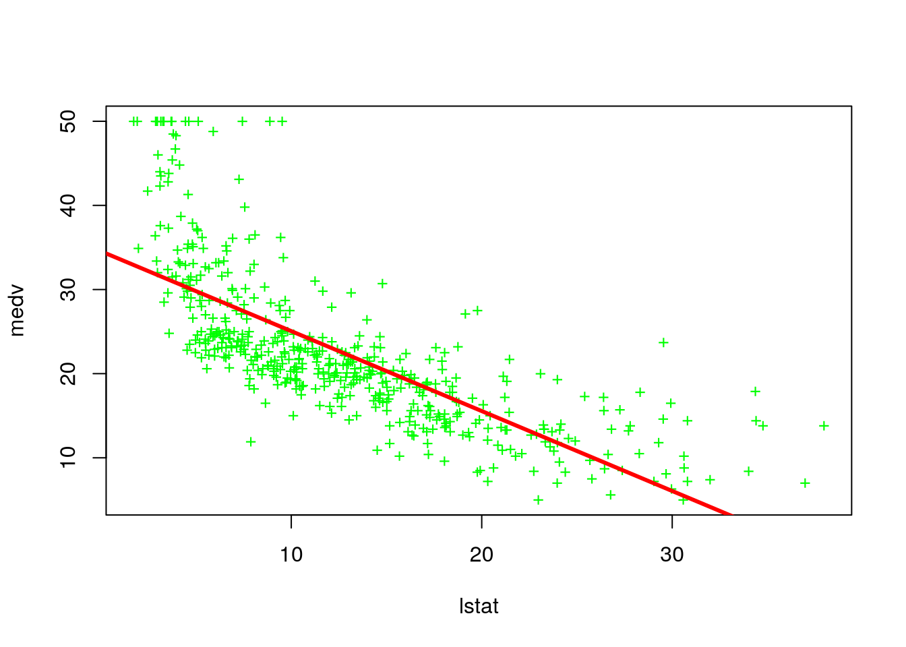
plot (1:20 , 1:20, pch = 1:20)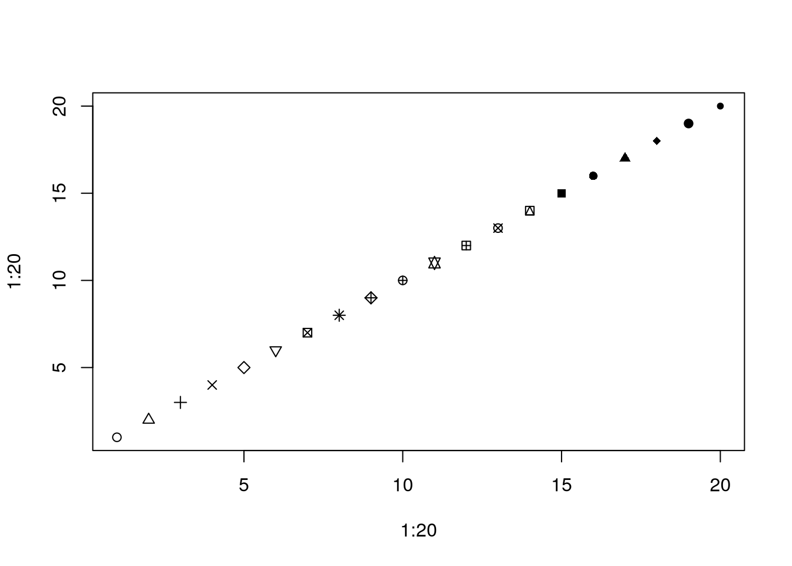
par(mfrow = c(2,2), mar = rep(2,4))
plot(lm_fit)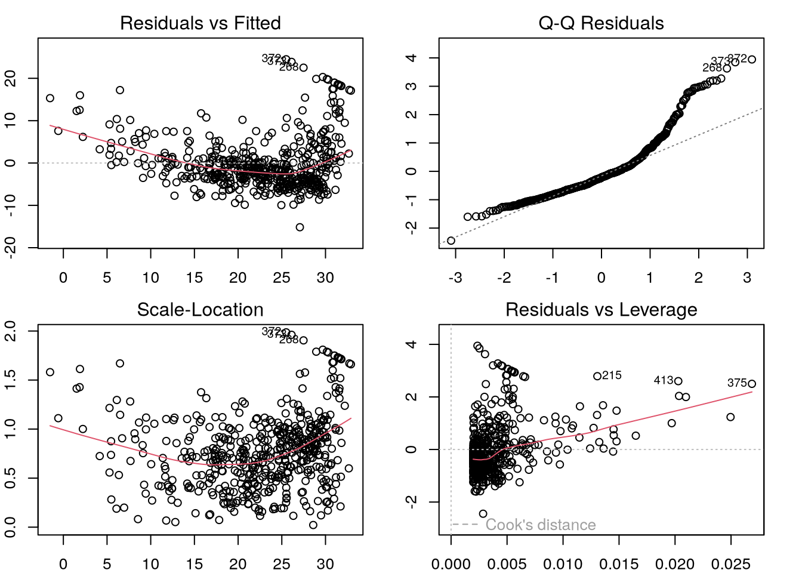
plot(predict(lm_fit), residuals(lm_fit))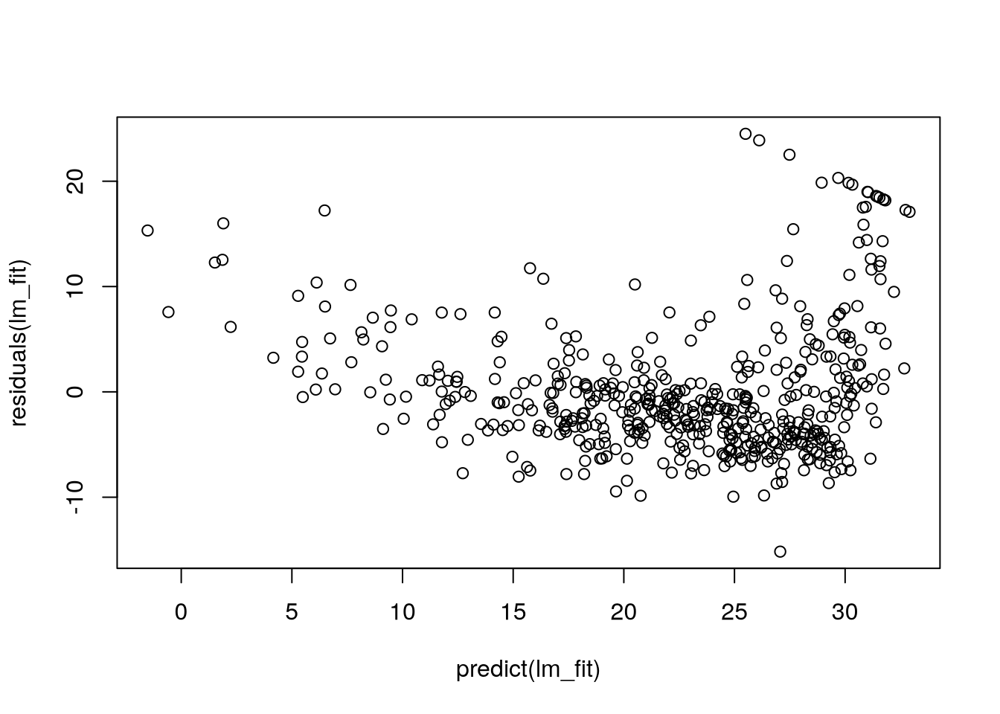
plot(predict(lm_fit), rstudent(lm_fit))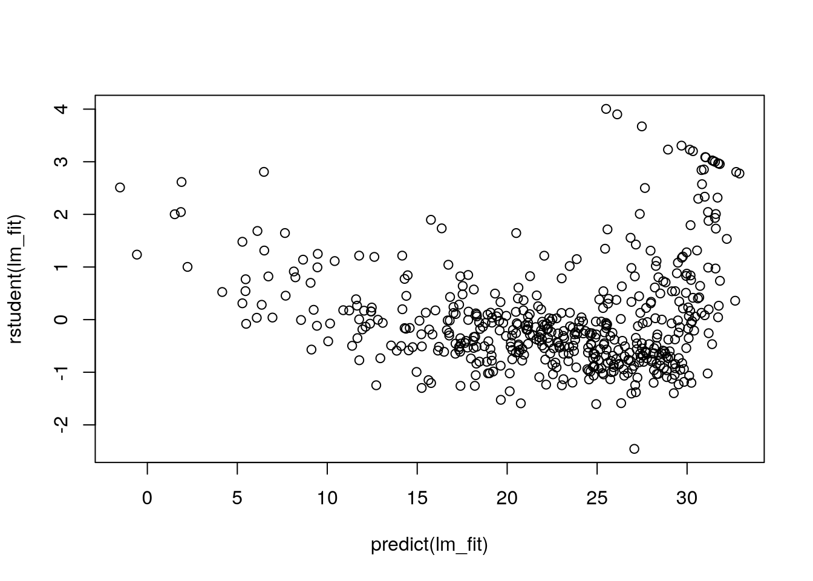
Residual plots show non-linearity. Leverage statistics:
plot(hatvalues(lm_fit))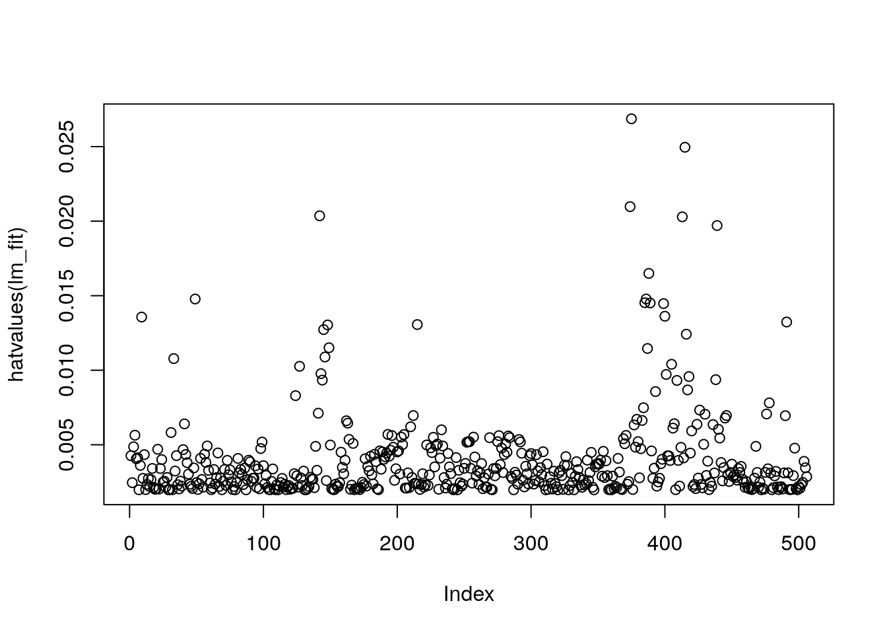
which.max(hatvalues(lm_fit))375
375 lm_fit <- lm(medv ~ lstat + age, data = Boston)
summary(lm_fit)
Call:
lm(formula = medv ~ lstat + age, data = Boston)
Residuals:
Min 1Q Median 3Q Max
-15.98 -3.98 -1.28 1.97 23.16
Coefficients:
Estimate Std. Error t value Pr(>|t|)
(Intercept) 33.2228 0.7308 45.46 <2e-16 ***
lstat -1.0321 0.0482 -21.42 <2e-16 ***
age 0.0345 0.0122 2.83 0.0049 **
---
Signif. codes: 0 '***' 0.001 '**' 0.01 '*' 0.05 '.' 0.1 ' ' 1
Residual standard error: 6.17 on 503 degrees of freedom
Multiple R-squared: 0.551, Adjusted R-squared: 0.549
F-statistic: 309 on 2 and 503 DF, p-value: <2e-16lm_fit <- lm(medv ~ ., data = Boston)
summary(lm_fit)
Call:
lm(formula = medv ~ ., data = Boston)
Residuals:
Min 1Q Median 3Q Max
-15.130 -2.767 -0.581 1.941 26.253
Coefficients:
Estimate Std. Error t value Pr(>|t|)
(Intercept) 41.61727 4.93604 8.43 3.8e-16 ***
crim -0.12139 0.03300 -3.68 0.00026 ***
zn 0.04696 0.01388 3.38 0.00077 ***
indus 0.01347 0.06214 0.22 0.82852
chas 2.83999 0.87001 3.26 0.00117 **
nox -18.75802 3.85135 -4.87 1.5e-06 ***
rm 3.65812 0.42025 8.70 < 2e-16 ***
age 0.00361 0.01333 0.27 0.78659
dis -1.49075 0.20162 -7.39 6.2e-13 ***
rad 0.28940 0.06691 4.33 1.8e-05 ***
tax -0.01268 0.00380 -3.34 0.00091 ***
ptratio -0.93753 0.13221 -7.09 4.6e-12 ***
lstat -0.55202 0.05066 -10.90 < 2e-16 ***
---
Signif. codes: 0 '***' 0.001 '**' 0.01 '*' 0.05 '.' 0.1 ' ' 1
Residual standard error: 4.8 on 493 degrees of freedom
Multiple R-squared: 0.734, Adjusted R-squared: 0.728
F-statistic: 114 on 12 and 493 DF, p-value: <2e-16summary(lm_fit)$r.sq[1] 0.734summary(lm_fit)$sigma # RSE[1] 4.8library(car)Loading required package: carDatavif(lm_fit) crim zn indus chas nox rm age dis rad tax
1.77 2.30 3.99 1.07 4.37 1.91 3.09 3.95 7.45 9.00
ptratio lstat
1.80 2.87 Remove a variable
lm_fit1 <- update(lm_fit, ~ . - age - indus)
summary(lm_fit1)
Call:
lm(formula = medv ~ crim + zn + chas + nox + rm + dis + rad +
tax + ptratio + lstat, data = Boston)
Residuals:
Min 1Q Median 3Q Max
-15.181 -2.762 -0.624 1.845 26.392
Coefficients:
Estimate Std. Error t value Pr(>|t|)
(Intercept) 41.45175 4.90328 8.45 3.2e-16 ***
crim -0.12166 0.03292 -3.70 0.00024 ***
zn 0.04619 0.01367 3.38 0.00079 ***
chas 2.87187 0.86259 3.33 0.00094 ***
nox -18.26243 3.56525 -5.12 4.3e-07 ***
rm 3.67296 0.40913 8.98 < 2e-16 ***
dis -1.51595 0.18767 -8.08 5.1e-15 ***
rad 0.28393 0.06394 4.44 1.1e-05 ***
tax -0.01229 0.00341 -3.61 0.00034 ***
ptratio -0.93096 0.13042 -7.14 3.4e-12 ***
lstat -0.54651 0.04744 -11.52 < 2e-16 ***
---
Signif. codes: 0 '***' 0.001 '**' 0.01 '*' 0.05 '.' 0.1 ' ' 1
Residual standard error: 4.79 on 495 degrees of freedom
Multiple R-squared: 0.734, Adjusted R-squared: 0.729
F-statistic: 137 on 10 and 495 DF, p-value: <2e-16plot(predict(lm_fit), residuals(lm_fit))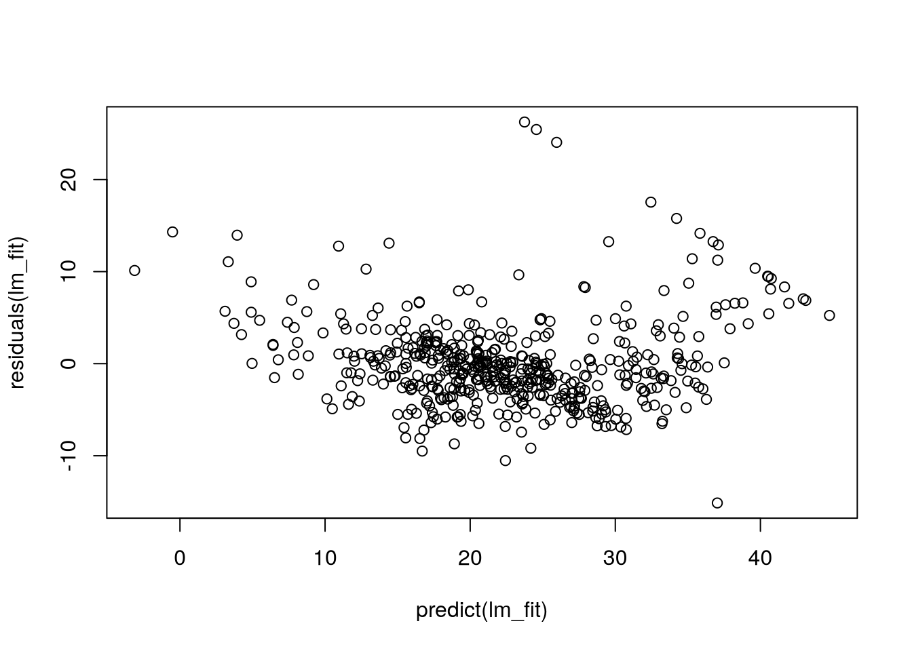
plot(predict(lm_fit1), residuals(lm_fit1))summary(lm(medv ~ lstat * age, data = Boston))
Call:
lm(formula = medv ~ lstat * age, data = Boston)
Residuals:
Min 1Q Median 3Q Max
-15.81 -4.04 -1.33 2.08 27.55
Coefficients:
Estimate Std. Error t value Pr(>|t|)
(Intercept) 36.088536 1.469835 24.55 < 2e-16 ***
lstat -1.392117 0.167456 -8.31 8.8e-16 ***
age -0.000721 0.019879 -0.04 0.971
lstat:age 0.004156 0.001852 2.24 0.025 *
---
Signif. codes: 0 '***' 0.001 '**' 0.01 '*' 0.05 '.' 0.1 ' ' 1
Residual standard error: 6.15 on 502 degrees of freedom
Multiple R-squared: 0.556, Adjusted R-squared: 0.553
F-statistic: 209 on 3 and 502 DF, p-value: <2e-16lm_fit2 <- lm(medv ~ lstat + I(lstat^2), data = Boston)
summary(lm_fit2)
Call:
lm(formula = medv ~ lstat + I(lstat^2), data = Boston)
Residuals:
Min 1Q Median 3Q Max
-15.28 -3.83 -0.53 2.31 25.41
Coefficients:
Estimate Std. Error t value Pr(>|t|)
(Intercept) 42.86201 0.87208 49.1 <2e-16 ***
lstat -2.33282 0.12380 -18.8 <2e-16 ***
I(lstat^2) 0.04355 0.00375 11.6 <2e-16 ***
---
Signif. codes: 0 '***' 0.001 '**' 0.01 '*' 0.05 '.' 0.1 ' ' 1
Residual standard error: 5.52 on 503 degrees of freedom
Multiple R-squared: 0.641, Adjusted R-squared: 0.639
F-statistic: 449 on 2 and 503 DF, p-value: <2e-16compare the quadradic fit with the linear fit
lm_fit <- lm(medv ~ lstat, data = Boston)
anova(lm_fit, lm_fit2)Analysis of Variance Table
Model 1: medv ~ lstat
Model 2: medv ~ lstat + I(lstat^2)
Res.Df RSS Df Sum of Sq F Pr(>F)
1 504 19472
2 503 15347 1 4125 135 <2e-16 ***
---
Signif. codes: 0 '***' 0.001 '**' 0.01 '*' 0.05 '.' 0.1 ' ' 1F and p-values show the quadratic model to be far superior.
par(mfrow = c(2,2), mar = rep(1,4))
plot(lm_fit2)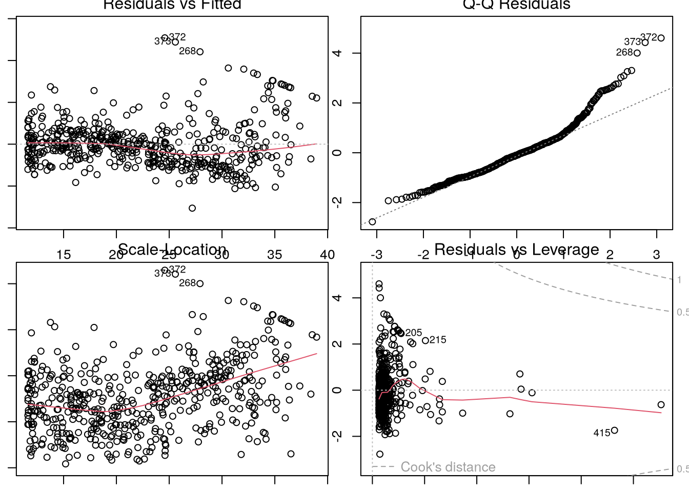
No discernable pattern in residuals
Higher order polynomials
lm_fit5 <- lm(medv ~ poly(lstat, 5), data = Boston)
lm_fit6 <- lm(medv ~ poly(lstat, 6), data = Boston)
summary(lm_fit5)
Call:
lm(formula = medv ~ poly(lstat, 5), data = Boston)
Residuals:
Min 1Q Median 3Q Max
-13.543 -3.104 -0.705 2.084 27.115
Coefficients:
Estimate Std. Error t value Pr(>|t|)
(Intercept) 22.533 0.232 97.20 < 2e-16 ***
poly(lstat, 5)1 -152.460 5.215 -29.24 < 2e-16 ***
poly(lstat, 5)2 64.227 5.215 12.32 < 2e-16 ***
poly(lstat, 5)3 -27.051 5.215 -5.19 3.1e-07 ***
poly(lstat, 5)4 25.452 5.215 4.88 1.4e-06 ***
poly(lstat, 5)5 -19.252 5.215 -3.69 0.00025 ***
---
Signif. codes: 0 '***' 0.001 '**' 0.01 '*' 0.05 '.' 0.1 ' ' 1
Residual standard error: 5.21 on 500 degrees of freedom
Multiple R-squared: 0.682, Adjusted R-squared: 0.679
F-statistic: 214 on 5 and 500 DF, p-value: <2e-16summary(lm_fit6)
Call:
lm(formula = medv ~ poly(lstat, 6), data = Boston)
Residuals:
Min 1Q Median 3Q Max
-14.732 -3.157 -0.694 2.076 26.899
Coefficients:
Estimate Std. Error t value Pr(>|t|)
(Intercept) 22.533 0.232 97.25 < 2e-16 ***
poly(lstat, 6)1 -152.460 5.212 -29.25 < 2e-16 ***
poly(lstat, 6)2 64.227 5.212 12.32 < 2e-16 ***
poly(lstat, 6)3 -27.051 5.212 -5.19 3.1e-07 ***
poly(lstat, 6)4 25.452 5.212 4.88 1.4e-06 ***
poly(lstat, 6)5 -19.252 5.212 -3.69 0.00025 ***
poly(lstat, 6)6 6.509 5.212 1.25 0.21231
---
Signif. codes: 0 '***' 0.001 '**' 0.01 '*' 0.05 '.' 0.1 ' ' 1
Residual standard error: 5.21 on 499 degrees of freedom
Multiple R-squared: 0.683, Adjusted R-squared: 0.679
F-statistic: 179 on 6 and 499 DF, p-value: <2e-16No improvement after \(x^5\).
Not restricted to polynomials.
summary(lm(medv ~ log(rm), data = Boston))
Call:
lm(formula = medv ~ log(rm), data = Boston)
Residuals:
Min 1Q Median 3Q Max
-19.49 -2.87 -0.10 2.84 39.82
Coefficients:
Estimate Std. Error t value Pr(>|t|)
(Intercept) -76.49 5.03 -15.2 <2e-16 ***
log(rm) 54.05 2.74 19.7 <2e-16 ***
---
Signif. codes: 0 '***' 0.001 '**' 0.01 '*' 0.05 '.' 0.1 ' ' 1
Residual standard error: 6.91 on 504 degrees of freedom
Multiple R-squared: 0.436, Adjusted R-squared: 0.435
F-statistic: 389 on 1 and 504 DF, p-value: <2e-16head(Carseats) Sales CompPrice Income Advertising Population Price ShelveLoc Age Education
1 9.50 138 73 11 276 120 Bad 42 17
2 11.22 111 48 16 260 83 Good 65 10
3 10.06 113 35 10 269 80 Medium 59 12
4 7.40 117 100 4 466 97 Medium 55 14
5 4.15 141 64 3 340 128 Bad 38 13
6 10.81 124 113 13 501 72 Bad 78 16
Urban US
1 Yes Yes
2 Yes Yes
3 Yes Yes
4 Yes Yes
5 Yes No
6 No Yeslm_fit <- lm(Sales ~ . + Income:Advertising + Price:Age,
data = Carseats)
summary(lm_fit)
Call:
lm(formula = Sales ~ . + Income:Advertising + Price:Age, data = Carseats)
Residuals:
Min 1Q Median 3Q Max
-2.921 -0.750 0.018 0.675 3.341
Coefficients:
Estimate Std. Error t value Pr(>|t|)
(Intercept) 6.575565 1.008747 6.52 2.2e-10 ***
CompPrice 0.092937 0.004118 22.57 < 2e-16 ***
Income 0.010894 0.002604 4.18 3.6e-05 ***
Advertising 0.070246 0.022609 3.11 0.00203 **
Population 0.000159 0.000368 0.43 0.66533
Price -0.100806 0.007440 -13.55 < 2e-16 ***
ShelveLocGood 4.848676 0.152838 31.72 < 2e-16 ***
ShelveLocMedium 1.953262 0.125768 15.53 < 2e-16 ***
Age -0.057947 0.015951 -3.63 0.00032 ***
Education -0.020852 0.019613 -1.06 0.28836
UrbanYes 0.140160 0.112402 1.25 0.21317
USYes -0.157557 0.148923 -1.06 0.29073
Income:Advertising 0.000751 0.000278 2.70 0.00729 **
Price:Age 0.000107 0.000133 0.80 0.42381
---
Signif. codes: 0 '***' 0.001 '**' 0.01 '*' 0.05 '.' 0.1 ' ' 1
Residual standard error: 1.01 on 386 degrees of freedom
Multiple R-squared: 0.876, Adjusted R-squared: 0.872
F-statistic: 210 on 13 and 386 DF, p-value: <2e-16The default coding used for the dummy categorical variables
with(Carseats, contrasts(ShelveLoc)) Good Medium
Bad 0 0
Good 1 0
Medium 0 1lm_fit <- lm(mpg ~ horsepower, data = Auto)
summary(lm_fit)
Call:
lm(formula = mpg ~ horsepower, data = Auto)
Residuals:
Min 1Q Median 3Q Max
-13.571 -3.259 -0.344 2.763 16.924
Coefficients:
Estimate Std. Error t value Pr(>|t|)
(Intercept) 39.93586 0.71750 55.7 <2e-16 ***
horsepower -0.15784 0.00645 -24.5 <2e-16 ***
---
Signif. codes: 0 '***' 0.001 '**' 0.01 '*' 0.05 '.' 0.1 ' ' 1
Residual standard error: 4.91 on 390 degrees of freedom
Multiple R-squared: 0.606, Adjusted R-squared: 0.605
F-statistic: 600 on 1 and 390 DF, p-value: <2e-16predict(lm_fit, data.frame(horsepower = 98),
interval = "confidence") fit lwr upr
1 24.5 24 25predict(lm_fit, data.frame(horsepower = 98),
interval = "prediction") fit lwr upr
1 24.5 14.8 34.1with(lm_fit$model, plot(horsepower, mpg,
col = "green",
pch = "+"))
abline(lm_fit, lwd = 3, col = "red")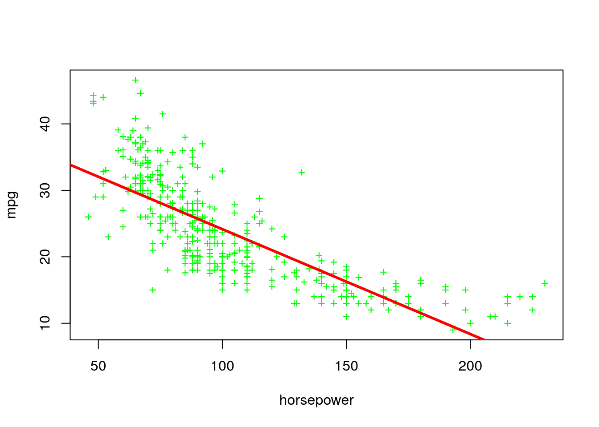
plot(Auto)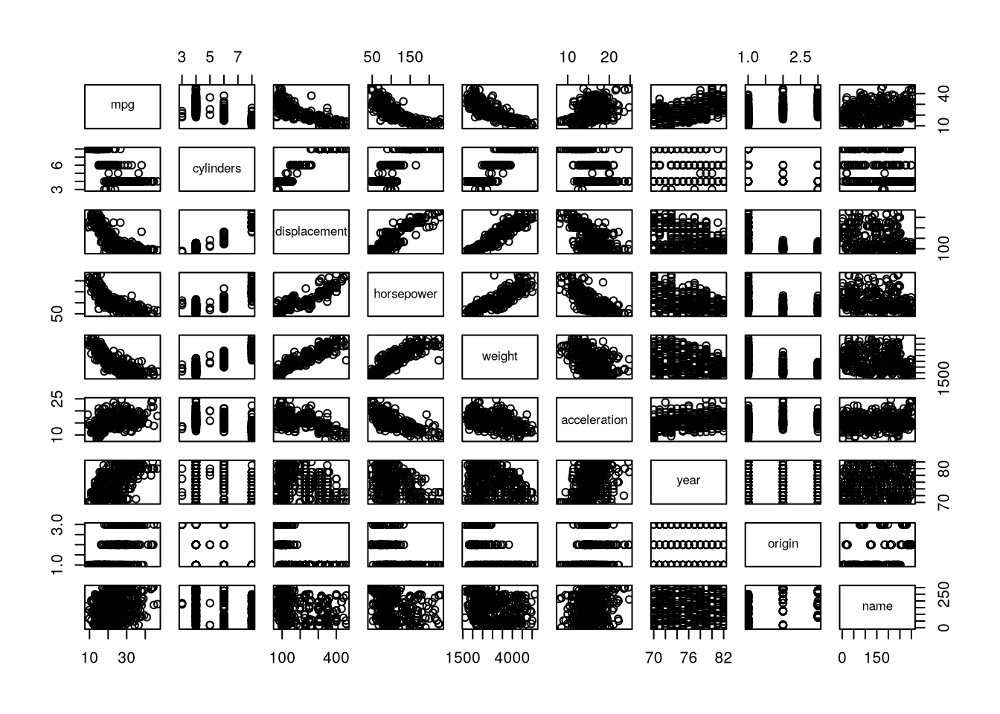
Auto |>
dplyr::select(-name) |>
cor() mpg cylinders displacement horsepower weight acceleration
mpg 1.000 -0.778 -0.805 -0.778 -0.832 0.423
cylinders -0.778 1.000 0.951 0.843 0.898 -0.505
displacement -0.805 0.951 1.000 0.897 0.933 -0.544
horsepower -0.778 0.843 0.897 1.000 0.865 -0.689
weight -0.832 0.898 0.933 0.865 1.000 -0.417
acceleration 0.423 -0.505 -0.544 -0.689 -0.417 1.000
year 0.581 -0.346 -0.370 -0.416 -0.309 0.290
origin 0.565 -0.569 -0.615 -0.455 -0.585 0.213
year origin
mpg 0.581 0.565
cylinders -0.346 -0.569
displacement -0.370 -0.615
horsepower -0.416 -0.455
weight -0.309 -0.585
acceleration 0.290 0.213
year 1.000 0.182
origin 0.182 1.000lm_fit <- lm(mpg ~ . - name, data = Auto)
summary(lm_fit)
Call:
lm(formula = mpg ~ . - name, data = Auto)
Residuals:
Min 1Q Median 3Q Max
-9.590 -2.157 -0.117 1.869 13.060
Coefficients:
Estimate Std. Error t value Pr(>|t|)
(Intercept) -1.72e+01 4.64e+00 -3.71 0.00024 ***
cylinders -4.93e-01 3.23e-01 -1.53 0.12780
displacement 1.99e-02 7.51e-03 2.65 0.00844 **
horsepower -1.70e-02 1.38e-02 -1.23 0.21963
weight -6.47e-03 6.52e-04 -9.93 < 2e-16 ***
acceleration 8.06e-02 9.88e-02 0.82 0.41548
year 7.51e-01 5.10e-02 14.73 < 2e-16 ***
origin 1.43e+00 2.78e-01 5.13 4.7e-07 ***
---
Signif. codes: 0 '***' 0.001 '**' 0.01 '*' 0.05 '.' 0.1 ' ' 1
Residual standard error: 3.33 on 384 degrees of freedom
Multiple R-squared: 0.821, Adjusted R-squared: 0.818
F-statistic: 252 on 7 and 384 DF, p-value: <2e-16lm(mpg ~ weight + year + origin, data = Auto) |>
summary()
Call:
lm(formula = mpg ~ weight + year + origin, data = Auto)
Residuals:
Min 1Q Median 3Q Max
-9.944 -2.095 -0.039 1.726 13.272
Coefficients:
Estimate Std. Error t value Pr(>|t|)
(Intercept) -1.80e+01 4.00e+00 -4.51 8.6e-06 ***
weight -5.99e-03 2.54e-04 -23.59 < 2e-16 ***
year 7.57e-01 4.83e-02 15.67 < 2e-16 ***
origin 1.15e+00 2.59e-01 4.44 1.2e-05 ***
---
Signif. codes: 0 '***' 0.001 '**' 0.01 '*' 0.05 '.' 0.1 ' ' 1
Residual standard error: 3.35 on 388 degrees of freedom
Multiple R-squared: 0.817, Adjusted R-squared: 0.816
F-statistic: 579 on 3 and 388 DF, p-value: <2e-16plot(predict(lm_fit), residuals(lm_fit))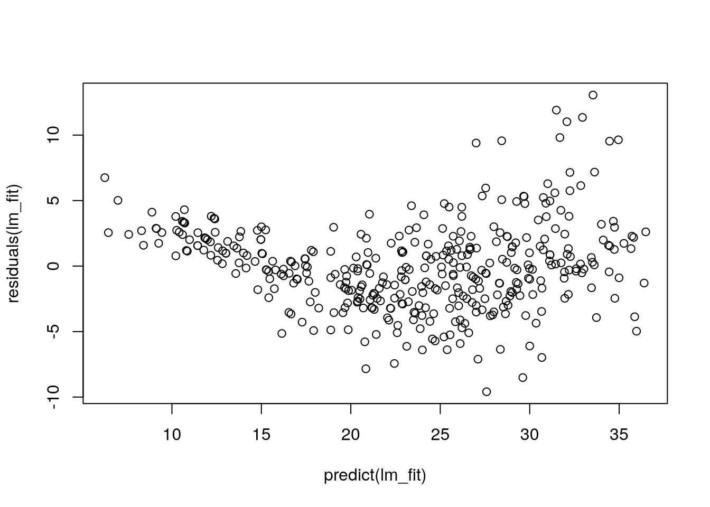
plot(hatvalues(lm_fit))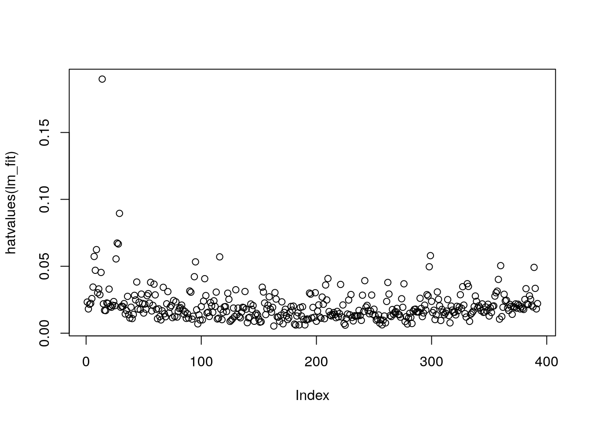
lm(mpg ~ cylinders:year, data = Auto) |> summary()
Call:
lm(formula = mpg ~ cylinders:year, data = Auto)
Residuals:
Min 1Q Median 3Q Max
-14.40 -3.59 -1.06 3.14 18.85
Coefficients:
Estimate Std. Error t value Pr(>|t|)
(Intercept) 42.48053 0.95897 44.3 <2e-16 ***
cylinders:year -0.04602 0.00222 -20.7 <2e-16 ***
---
Signif. codes: 0 '***' 0.001 '**' 0.01 '*' 0.05 '.' 0.1 ' ' 1
Residual standard error: 5.39 on 390 degrees of freedom
Multiple R-squared: 0.524, Adjusted R-squared: 0.522
F-statistic: 429 on 1 and 390 DF, p-value: <2e-16